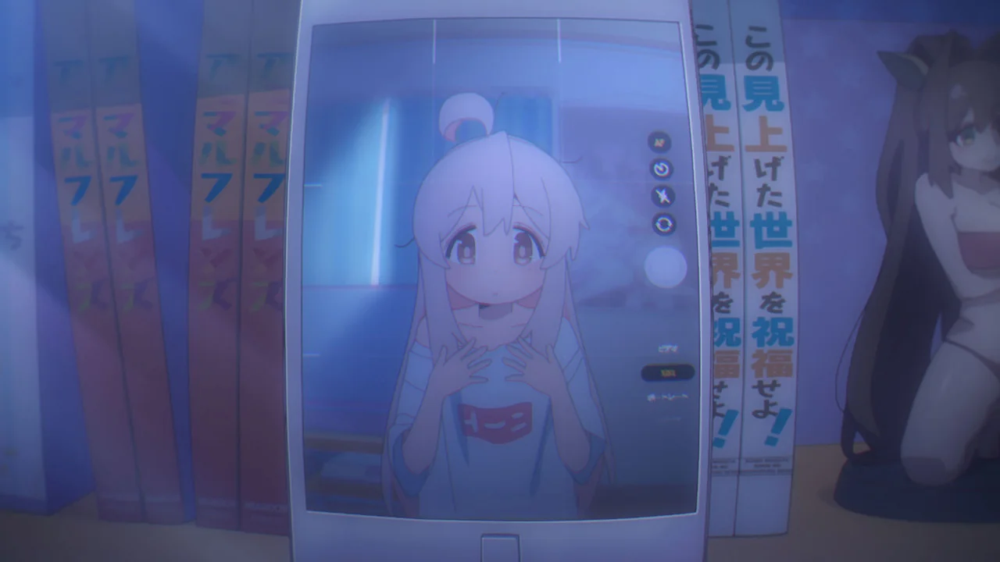
居家EPISODE 01
全 12 话 · 13 篇场景手记

居家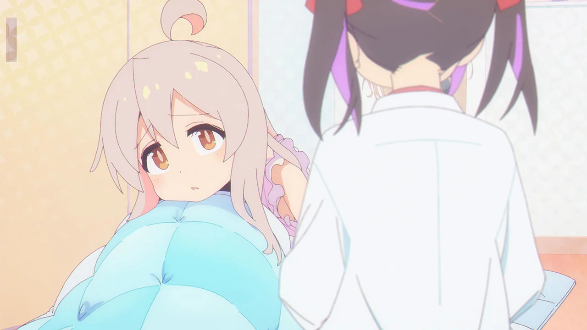
居家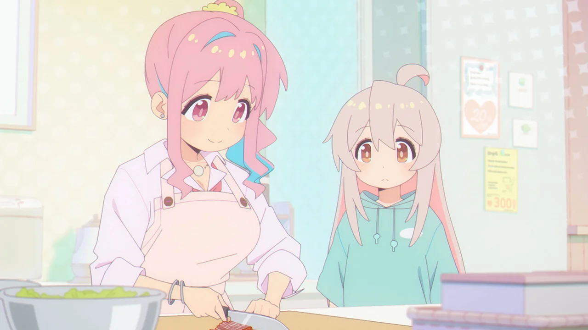
居家 外出
外出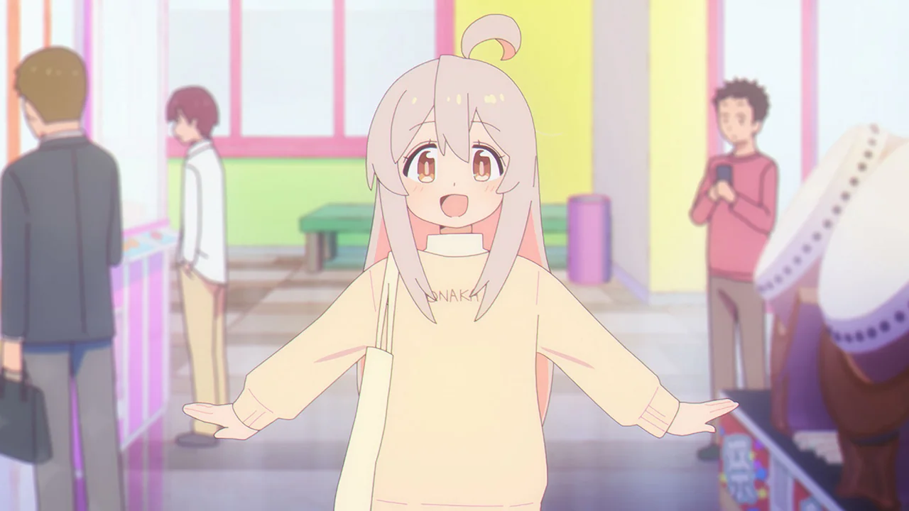
外出 外出
外出 校园
校园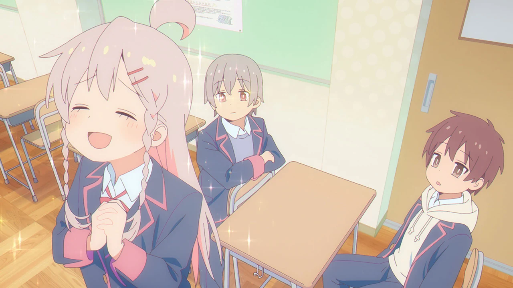
校园 居家
居家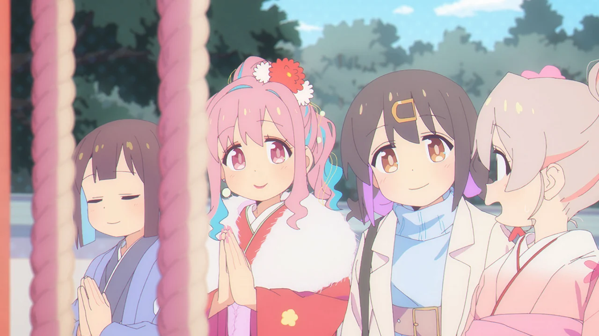
外出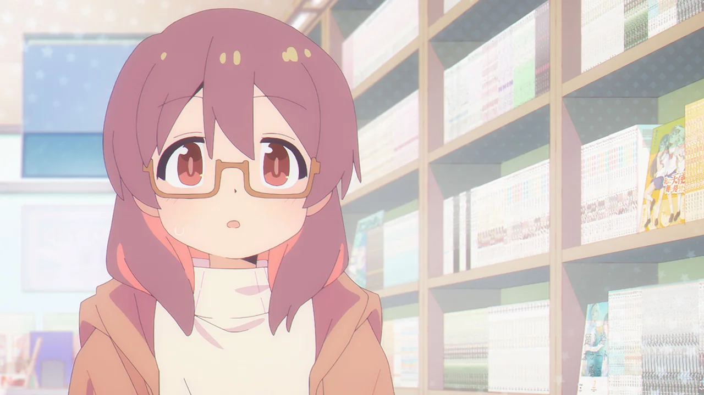
外出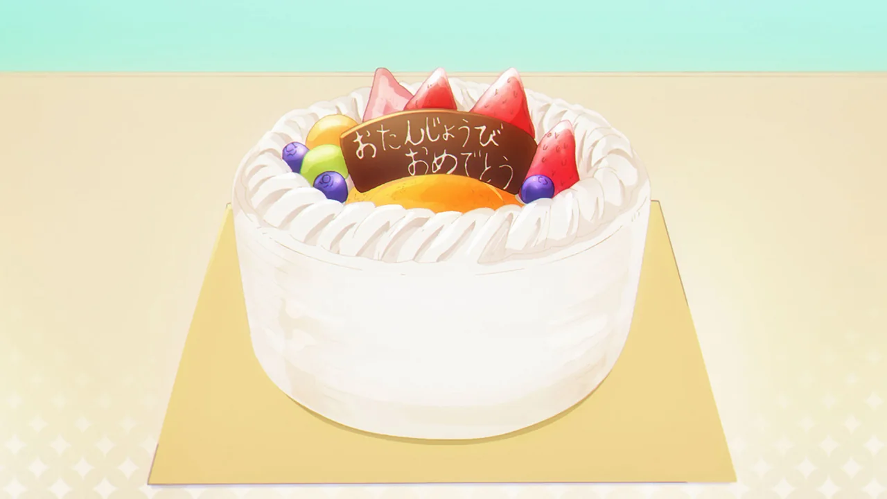
居家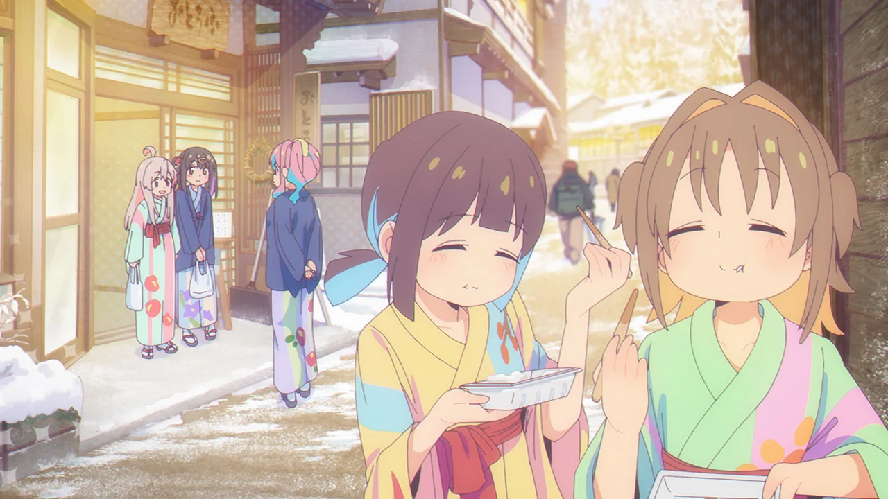
外出 緒山 まひろ
緒山 まひろ原本只想待在家里打游戏的哥哥，因为妹妹美波里的一次实验，以女孩子的模样重新走进了日常生活。怕生的真寻慢慢有了出门的理由，先是为了便利店的动画周边，后来还为了会在教室里等自己的朋友。
美波里跳级进了大学，学生时代也跑出过好成绩。实验是她的主意，照顾哥哥也是她的日常。真寻主动早起出门买周边时，两个人惦记的完全是不同的事，美波里却一样高兴得掉眼泪。
枫会做饭，喜欢打扮，也很会带第一次尝试的人一起玩。照顾妹妹红叶练出来的本事，用在拘谨的真寻身上也很自然。想认识这位看着张扬、待人却细心的姐姐，可以从她第一次在绪山家下厨看起。
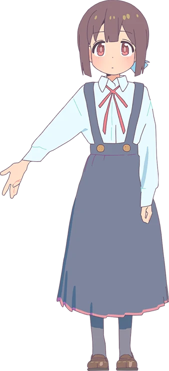
穂月 もみじ红叶喜欢行动方便的打扮。她和真寻认识的地方是超市，那时的两人连同学都还算不上。她伸手帮了一次忙，后来又带着朝日和美夜来敲绪山家的门，真寻的朋友圈便从这里一点点变大。
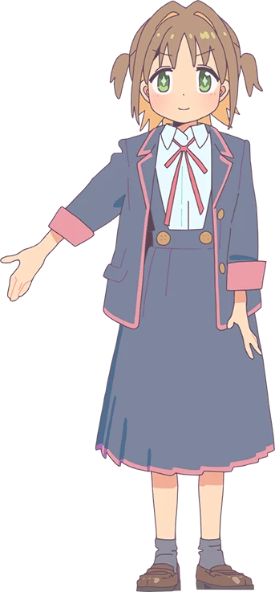
桜花 あさひ朝日习惯给别人起昵称，想到什么就说什么。运动场上她总有使不完的劲，碰到考试却会一下蔫下来。有她在，连补习都能变成和朋友多待一会儿的理由。
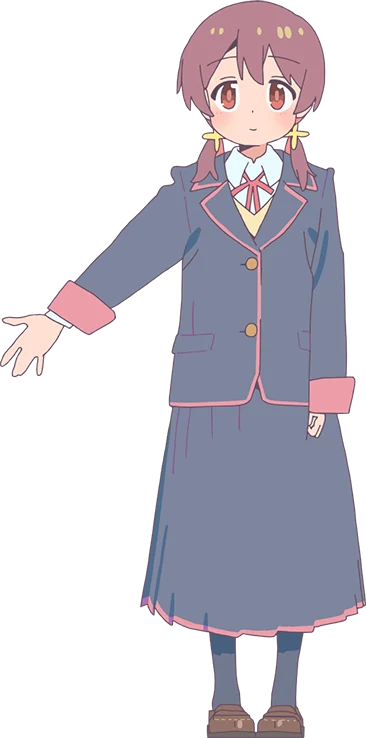
室崎 みよ美夜说话轻，喜欢观察身边的朋友。比起冲进热闹中央，她常常更享受看着大家凑在一起的样子。书店里的那次偶遇难得把镜头转向她自己，原来安静的同学也有想藏好的小爱好。